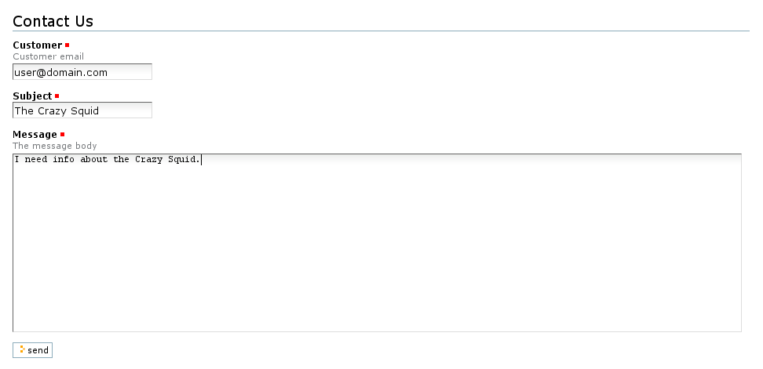
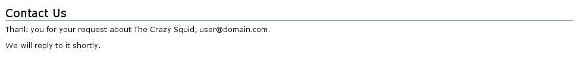

Creating a simple feedback form¶
Description
This section explains how to create a very basic feedback form.
Note
The code for this example is available to checkout from the collective as the *example.formlib* package.
For all practical sense formlib based components are really regular Zope view components with some convenient base classes for auto-generating output based on schemas and other configuration info. You will see that in a moment.
First, define an interface class with the schema of the form:
from zope.interface import Interface
from zope.schema import TextLine, Text
class IFeedbackForm(Interface):
"""
A typical feedback schema
"""
customer = TextLine(title=u'Customer',
description=u'Customer email',
required=True)
subject = TextLine(title=u'Subject',
required=True)
message = Text(title=u'Message',
description=u'The message body',
required=True)
The purpose of this interface is to define the fields of the form. The type of each schema field determines the type of widget that will be used by default for that field, so choose it carefully. To see all the schema fields available, read the zope.schema package's interfaces.
Next, create a form instance, which is a class that groups an ordered collection of fields and actions. To do that, simply subclass Five's PageForm class, a wrapper to the formlib Form class to keep Zope 2 happy. Type the following code into a Python file inside your product:
from Products.Five.formlib.formbase import PageForm
You will also need to make use of Five's strange hybrid between Zope 2 and Zope 3 page templates:
from Products.Five.browser.pagetemplatefile import ViewPageTemplateFile
The simplest way to define a collection of form fields is using the Fields constructor with the previous schema:
from zope.formlib import form
class FeedbackForm(PageForm):
"""
A typical feedback form
"""
form_fields = form.Fields(IFeedbackForm)
By inheriting from the PageForm class, the FeedbackForm class inherit functionality from formlib itself. By default, PageForm knows how to generate all the HTML that will make up of a finished form. But in order to do this, formlib needs to know what fields are wanted. This is done by providing the form_fields attribute. The Fields constructor is a formlib helper class that generates the appropriate field items from any Zope 3 schema (in this case, the schema interface defined above).
In order to provide a complete form, you need to specify the action to perform when the "submit" button of the form (or any other indicated) is activated. To define the action, use the form.action decorator with a handler function for the submitted data. More on actions later.
# use a dummy MailHost tool here to keep it simple
class MHost:
def __init__(self):
pass
def Send(self, sender, to, subject, body):
pass
class FeedbackForm(PageForm):
"""
A typical feedback form
"""
form_fields = form.Fields(IFeedbackForm)
result_template = ViewPageTemplateFile('feedback_result.pt')
@form.action("send")
def action_send(self, action, data):
mhost = MHost()
self.mFrom = data['customer']
self.mTo = "feedback@mycompany.com"
self.mSubject = data['subject']
self.mBody = data['message']
mhost.Send(self.mFrom, self.mTo, self.mSubject, self.mBody)
return self.result_template()
This is where the real work takes place. In this example, the feedback_result.pt page template is rendered and returned. All the view's attributes will be available inside this template, which will be introduced later.
An example result form is:
<html metal:use-macro="context/@@standard_macros/view">
<head>
</head>
<body>
<div metal:fill-slot="body">
<h1 tal:content="view/label">Form label</h1>
<p>Thank you for your request about
<span tal:replace="view/mSubject">subject</span>,
<span tal:replace="view/mFrom">customer@mail</span>.</p>
<p>We will reply to it shortly.</p>
</div>
</body>
</html>
zope.formlib already includes a default general page form template, with the fields labels, the widgets structures and the submit buttons, so you only have to register your form page with the appropiate ZCML snippet in order to make it accesible from a browser. Assuming you've placed your code into a file named browser.py:
<browser:page
name="feedback"
for="Products.CMFPlone.Portal.PloneSite"
class=".browser.FeedbackForm"
permission="zope.Public"
/>
Let's explain what this ZCML snippet means:
- The for attribute indicates the class or interface this view will be available for; in this case, it will be shown only from the root of a Plone site. To see the interfaces provided by a certain object, fire up the ZMI, navigate up to your object and check the Interfaces tab.
- The name attribute sets the name of the view, so the form will be available from a URL with the form http://<plone-site>/feedback.
- The class attribute indicates the view class responsible for displaying the page form, in this case, the FeedbackForm class inside the browser.py file.
- The permission attribute specify the permission needed to access the page.
Among the most used permissions you can find:
zope.Public - no restrictions, available to everyone.
zope.View - permission to view this component.
zope.ManageContent - add, edit and delete content objects.
Note: Keen readers will notice the special name for configuring the new view component, browser:page. This XML tag actually employs an XML namespace prefix which needs to be defined. Normally this is added right onto the configure tag like this:
<configure xmlns="http://namespaces.zope.org/zope" xmlns:browser="http://namespaces.zope.org/browser" xmlns:five="http://namespaces.zope.org/five">
And that's all! Here's how the form and result pages will look like:
Contact form:
Result page:
